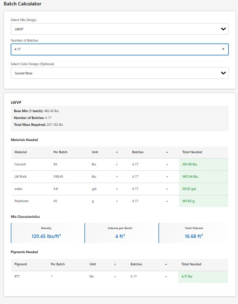
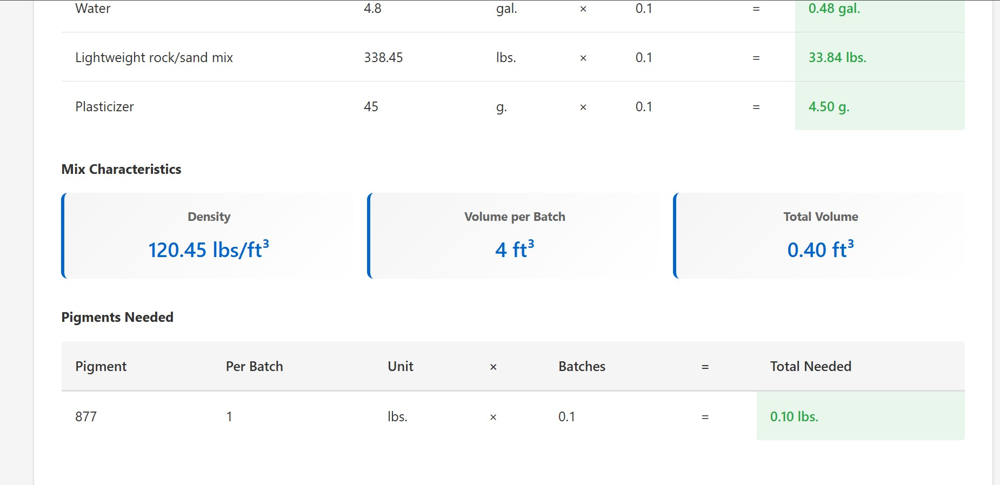
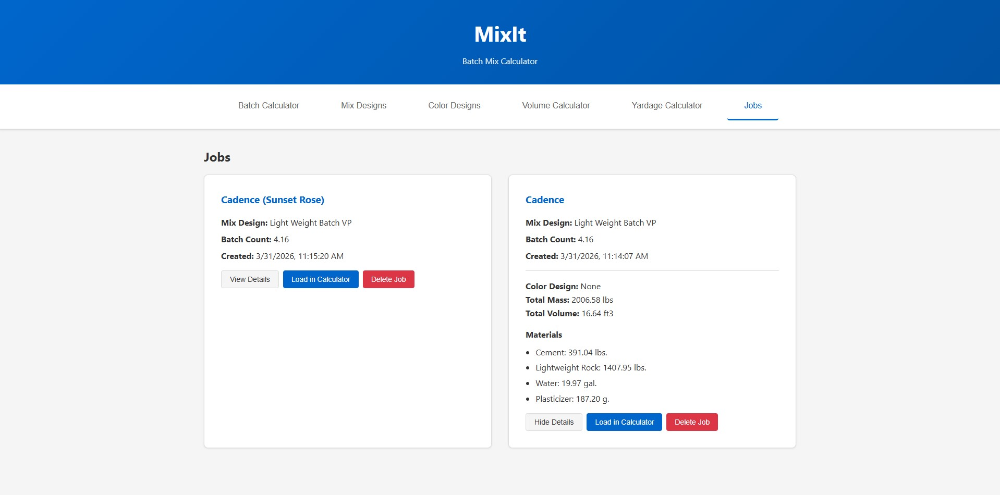
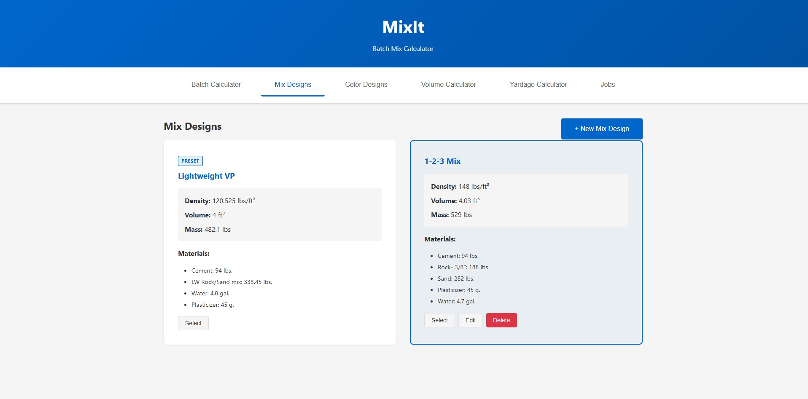
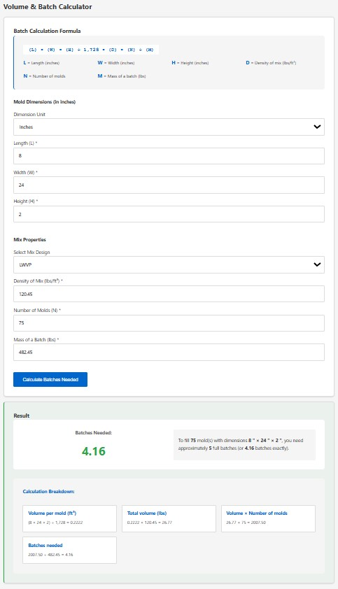
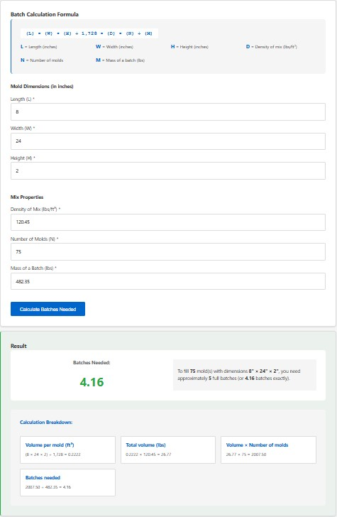
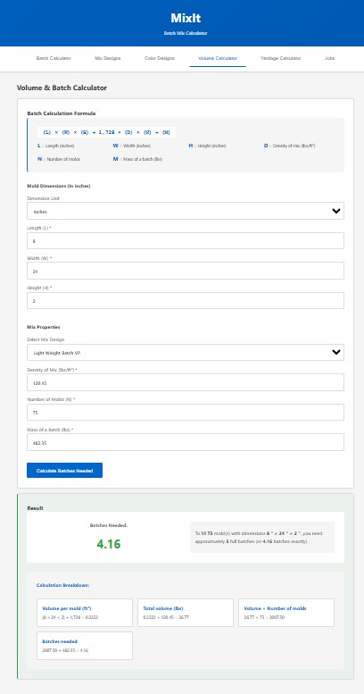

MixIt - Concretti Designs
Internal tooling suite that accelerates mix planning, job-volume calculations, and recipe management for concrete production operations.
MixIt interface snapshots. Demo available upon request for a deeper dive into the tool's capabilities and design evolution.







Need a custom workflow tool?
Let’s scope your project and build the right system for your team.
Go to Contact Form